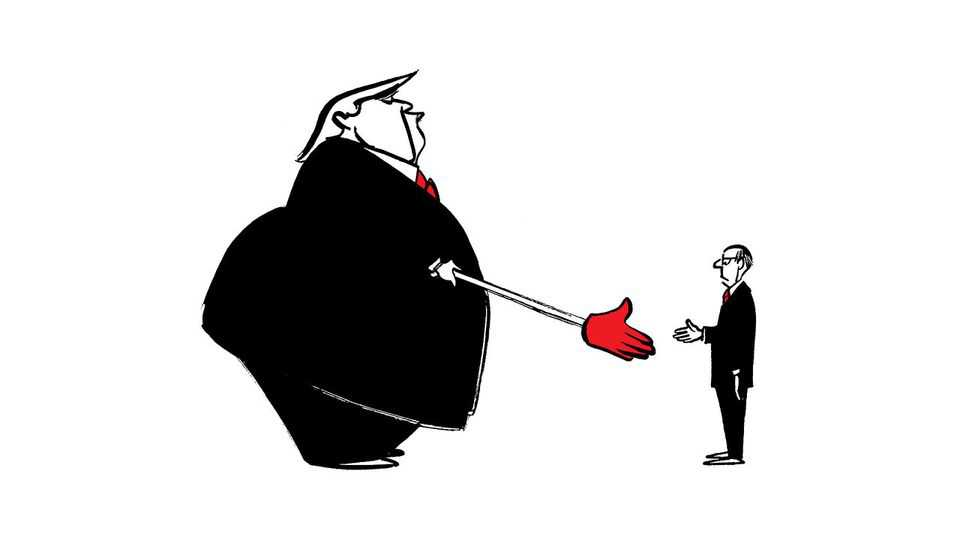

The United States is once again in a state of rebellion
Also this week, the backlash against AI, homelessness, Eisenhower and roads, oil predictions
July 16th 2026

Letters are welcome via email to letters@economist.comFind out more about how we process your letter
Your sweeping analysis of “The Wrecking-ball revolution” (July 4th) in geopolitics initiated by Donald Trump concluded by contemplating a new balance-of-power regime that nevertheless remains grounded in the principles established by the peace of Westphalia in 1648. Those treaties recognised the sovereign state as “the fundamental notion on which geopolitics is founded”, you said.
Otto von Bismarck and Henry Kissinger were the masters of balancing power. Both assessed national interests on a truly grand strategic scale. Mr Trump has replaced that with the art of the deal. A good example of this is the Abraham accords between Israel and the United Arab Emirates. The accords bring parties together to negotiate an agreement that serves their mutual interests. Although no overarching geopolitical blueprint may be guiding the process, the parties must still consider the wider consequences that any agreement may have within their respective spheres of influence and among their partners.
This emphasis on one-to-one dealmaking may be seen as a new way of rethinking the international order, as you suggested, without losing sight of the enduring logic of the balance of power. Rather than relying on grand designs, bilateral deals are themselves a mechanism for creating a balance of power.
Josef ErnstBremen, Germany
The revolt you describe is real enough, but the diagnosis is too convenient. Americans have not suddenly decided that immigration, foreigners and liberalism are intolerable. They have noticed that borders, universities, labour markets and public services are often managed as if citizens were merely one constituency among many, and not necessarily the preferred one.
The distinctions matter. Opposition to illegal immigration is not opposition to immigration. Nor is America plainly succumbing to a wave of Christian nationalism. Much of what you call nativism is closer to a demand for cultural confidence, a belief that liberal societies should be able to say what their norms are before importing large numbers of people from countries shaped by very different religious and legal traditions.
This is not a uniquely American spasm. Britain faces much the same argument, though perhaps with more queuing and less ammunition. One suspects that at certain London brunch tables “racism” remains the most socially efficient explanation for voters who have noticed that the old settlement is not working.
The post-war order is indeed under strain. But the wrecking ball was handed to voters by institutions that stopped asking for consent.
Michael LauckHouston
“Do not compute” (June 27th) highlighted the public backlash to AI data centres. But your example of a mid-size data centre using only as much water as two golf courses was a mild injustice for those of us who enjoy spending our weekends out on the links.
The sources of the water for a data centre and a golf course differ in ways that matter locally. Golf courses mainly rely on non-potable water from ponds, reclaimed wastewater and the like. By contrast, data centres often tap potable or near-potable freshwater, often from public utilities or aquifers. This distinction is crucial. The issue is not just how much water is used, but whether this competes directly with households.
Corbin DorfnerScottsdale, Arizona
The conflict around AI and data centres is not so much about the technology itself as it is the far larger contest between those who wish to live in a world ruled by CAESARE (Credentialed Academic Experts Should Always Run Everything) and those who don’t. CAESARE and his loyal followers should first consider how best to go about gaining the trust of the rest of Earth’s inhabitants. Humility and empathy would be a good start.
Steve AcetoMontreat, North Carolina
There was one important detail missing from your article on Denver’s progress towards solving its homelessness problem (“Down, not out”, June 20th). Providing temporary shelter and eventually permanent housing to 100% of the currently homeless will not fully solve the problem. The reservoir of potentially new homeless people is an order of magnitude greater than the number of homeless. About half of poverty households spend more than 90% of their income on housing. Each is one small misfortune away from homelessness.
The cost to create housing at this scale is significantly larger than any city can afford, so the short answer to your question about how much progress cities can make without broader support is not much. The economic and political will does not exist to make the substantial investment necessary to truly solve Denver or any city’s homelessness problem.
Tom RosenthalProfessor emeritus at the David Geffen School of MedicineUniversity of California, Los Angeles
“The wheel deal” (July 4th) looked at the history of Route 66 and mentioned that Dwight Eisenhower created the federal-highways act after being so impressed with Germany’s autobahn during the second world war. Eisenhower perceived the need for America’s interstate freeways long before that. As a lieutenant-colonel in 1919 he witnessed the American army’s gruelling two-month, 3,200 mile (5,100km) coast-to-coast convoy from Washington, DC, to San Francisco over what had been named the Lincoln Highway.
Much of the route west of Chicago was a rutted dirt road. The ordeal deeply influenced the future president regarding the national security imperative for modern road networks, culminating in the Federal Aid Highway Act of 1956. Michael Owen’s splendid book, “After Ike”, recounts the convoy’s ordeal.
DAVID SMOLLARSan Diego
I was surprised to see The Economist acknowledging it was wrong about its prediction that oil prices would remain very high (“We woz wrong about oil”, July 4th). The year is far from over. No one can accurately predict what Donald Trump will do next (except for his insiders) or how those actions may drive prices. You may have lost only the battle and not the war, especially as the ceasefire is unravelling. Maybe you were a bit too quick in claiming defeat.
Jamal Russell BlackLondon
Morris Adelman, the Adam Smith of the oil industry, once said that oil prices are bound to fluctuate between infinity and $2 per barrel. Even he was wrong, because oil prices fell below zero during the pandemic in April 2020. This is a cautionary tale for anyone who makes predictions and the reason why I reject your mea culpa. Why the oil-price shock never materialised is still a mystery. It seems the over-optimism of financial investors in stock markets has leaked into energy and pushed prices lower. It is too early to dismiss the “la-la land” hypothesis.
Davide TabarelliNE Nomisma EnergiaBologna, Italy
Admitting you made a mistake brought to mind the claim made by Stephen Dedalus in James Joyce’s “Ulysses”. Some “errors are volitional and are the portals of discovery”.
Gerald SmithWellington, New Zealand
It was a big relief to learn that The Economist is not always wrong and gets the future right from time to time. May I make my own modest prediction? In another quarter of a century, The Economist will still call the OECD “a club of mostly rich countries”.
Michael BildeJaegerspris, Denmark